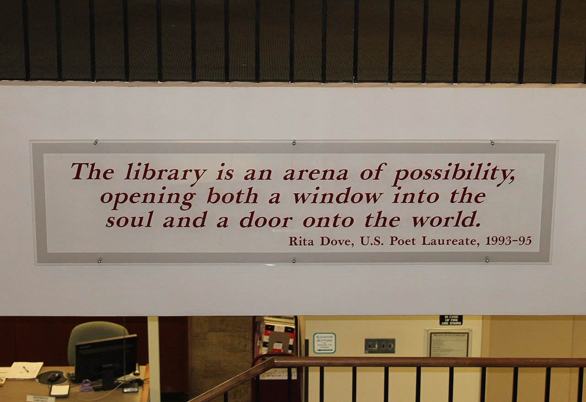
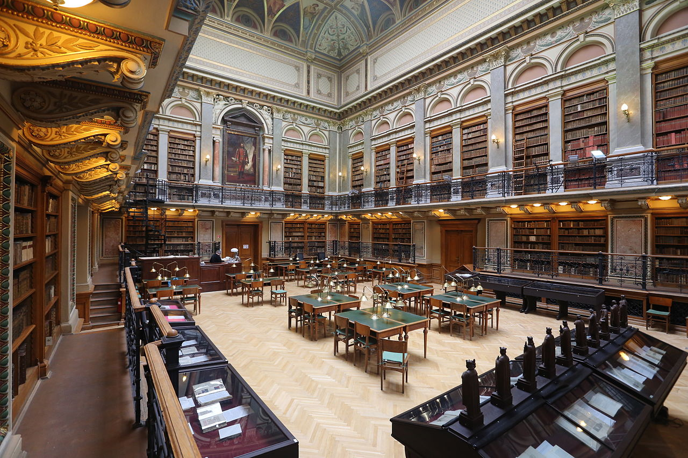
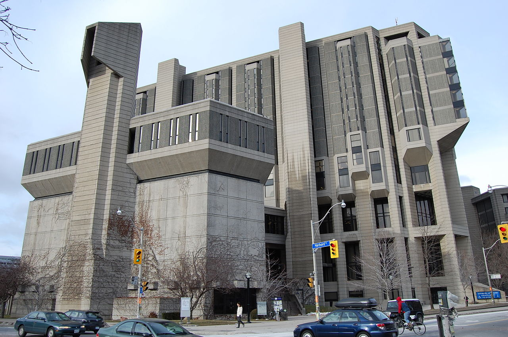
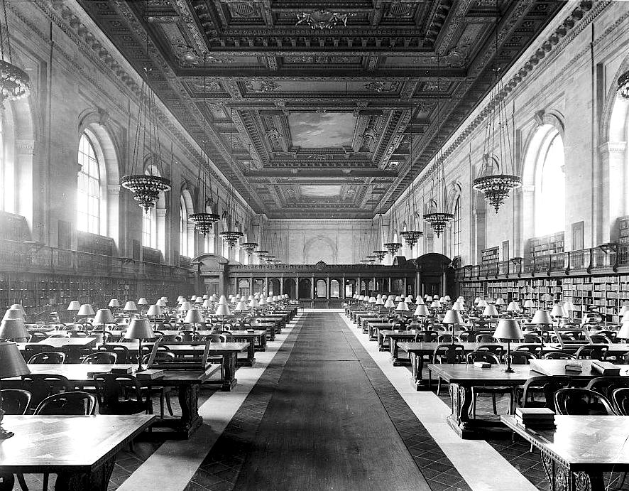
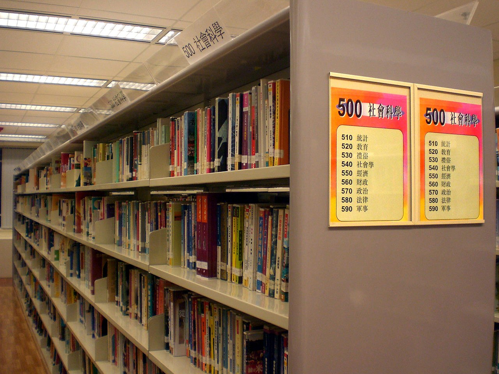

Types of libraries
- Academic libraries
- Children's libraries
- Public lending libraries
- Reference libraries
- Research libraries
- Digital libraries
Academic libraries
Academic libraries are generally located on college and university campuses and primarily serve the students and faculty of that and other academic institutions. Some academic libraries, especially those at public institutions, are accessible to members of the general public in whole or in part. Therefore Library Services are extended to the general public at a fee, most academic libraries create such services in order to mobilize and also to just enhance literacy levels in their own communities. Libraries are known as institutions that enables the improvement of the reading culture in all parts of the world.
The academic library provides a quiet study space for students on campus; it may also provide group study space, such as meeting rooms. In North America, Europe, and other parts of the world, academic libraries are becoming increasingly digitally oriented. The library provides a "gateway" for students and researchers to access various resources, both print/physical and digital
Academic institutions are subscribing to electronic journals databases, providing research and scholarly writing software, and usually provide computer workstations or computer labs for students to access journals, library search databases and portals, institutional electronic resources, Internet access, and course- or task-related software (i.e. word processing and spreadsheet software).
Some academic libraries take on new roles, for instance, acting as an electronic repository for institutional scholarly research and academic knowledge, such as the collection and curation of digital copies of students' theses and dissertations. Moreover, academic libraries are increasingly acting as publishers on their own on a not-for-profit basis, especially in the form of fully Open Access institutional publishers
Children's libraries
Children's libraries are special collections of books intended for juvenile readers and usually kept in separate rooms of general public libraries[18][citation needed]. Some children's libraries have entire floors or wings dedicated to them in bigger libraries while smaller ones may have a separate room or area for children. They are an educational agency seeking to acquaint the young with the world's literature and to cultivate a love for reading. Their work supplements that of the public schools. Services commonly provided by public libraries may include storytelling sessions for infants, toddlers, preschool children, or after-school programs, all with an intention of developing early literacy skills and a love of books. One of the most popular programs offered in public libraries are summer reading programs for children, families, and adults. Another popular reading program for children is PAWS TO READ or similar programs where children can read to certified therapy dogs. Since animals are a calming influence and there is no judgment, children learn confidence and a love of reading. Many states have these types of programs: parents need simply ask their librarian to see if it is available at their local library.
Public lending libraries
A public library provides services to the general public. If the library is part of a countywide library system, citizens with an active library card from around that county can use the library branches associated with the library system. A library can serve only their city, however, if they are not a member of the county public library system. Much of the materials located within a public library are available for borrowing. The library staff decides upon the number of items patrons are allowed to borrow, as well as the details of borrowing time allotted. Typically, libraries issue library cards to community members wishing to borrow books. Often visitors to a city are able to obtain a public library card.
Many public libraries also serve as community organizations that provide free services and events to the public, such as reading groups and toddler story time. For many communities, the library is a source of connection to a vast world, obtainable knowledge and understanding, and entertainment. According to a study by the Pennsylvania Library Association, public library services play a major role in fighting rising illiteracy rates among youths.[25] Public libraries are protected and funded by the public they serve.
Digital libraries
Digital libraries are libraries that house digital resources. They are defined as an organization and not a service that provide access to digital works, have a preservation responsibility to provide future access to materials, and provides these items easily and affordably.The definition of a digital library implies that "a digital library uses a variety of software, networking technologies and standards to facilitate access to digital content and data to a designated user community."[37] Access to digital libraries can be influenced by several factors, either individually or together. The most common factors that influence access are: The library's content, the characteristics and information needs of the target users, the library's digital interface, the goals and objectives of the library's organizational structure, and the standards and regulations that govern library use. Access will depend on the users ability to discover and retrieve documents that interest them and that they require, which in turn is a preservation question. Digital objects cannot be preserved passively, they must be curated by digital librarians to ensure the trust and integrity of the digital objects. One of the biggest considerations for digital librarians is the need to provide long-term access to their resources; to do this, there are two issues requiring watchfulness: Media failure and format obsolescence. With media failure, a particular digital item is unusable because of some sort of error or problem. A scratched CD-Rom, for example, will not display its contents correctly, but another, unscratched disk will not have that problem. Format obsolescence is when a digital format has been superseded by newer technology, and so items in the old format are unreadable and unusable. Dealing with media failure is a reactive process, because something is done only when a problem presents itself. In contrast, format obsolescence is preparatory.
Research Library
A research library is a collection of materials on one or more subjects. A research library supports scholarly or scientific research and will generally include primary as well as secondary sources; it will maintain permanent collections and attempt to provide access to all necessary materials. A research library is most often an academic or national library, but a large special library may have a research library within its special field, and a very few of the largest public libraries also serve as research libraries. A large university library may be considered a research library; and in North America, such libraries may belong to the Association of Research Libraries.[32] In the United Kingdom, they may be members of Research Libraries UK (RLUK). A research library can be either a reference library, which does not lend its holdings, or a lending library, which does lend all or some of its holdings. Some extremely large or traditional research libraries are entirely reference in this sense, lending none of their materials; most academic research libraries, at least in the US and the UK, now lend books, but not periodicals or other materials. Many research libraries are attached to a parental organization and serve only members of that organization. Examples of research libraries include the British Library, the Bodleian Library at Oxford University and the New York Public Library Main Branch on 42nd Street in Manhattan, State Public Scientific Technological Library of the Siberian Branch of the Russian Academy of Science
the greatest Libraries in the world

Poet Laureate Rita Dove's definition of a library at entrance to the Maine State Library in Augusta, Maine, United States

The University Library in Budapest, Hungary

The Robarts Library at the University of Toronto, Canada

Main Reading Room of the New York City Public Library on 5th Avenue ca, 1910–1920

The Robarts Library at the University of Toronto, Canada
Library shelves in Hong Kong, showing numbers of the classification scheme to help readers locate works in that section